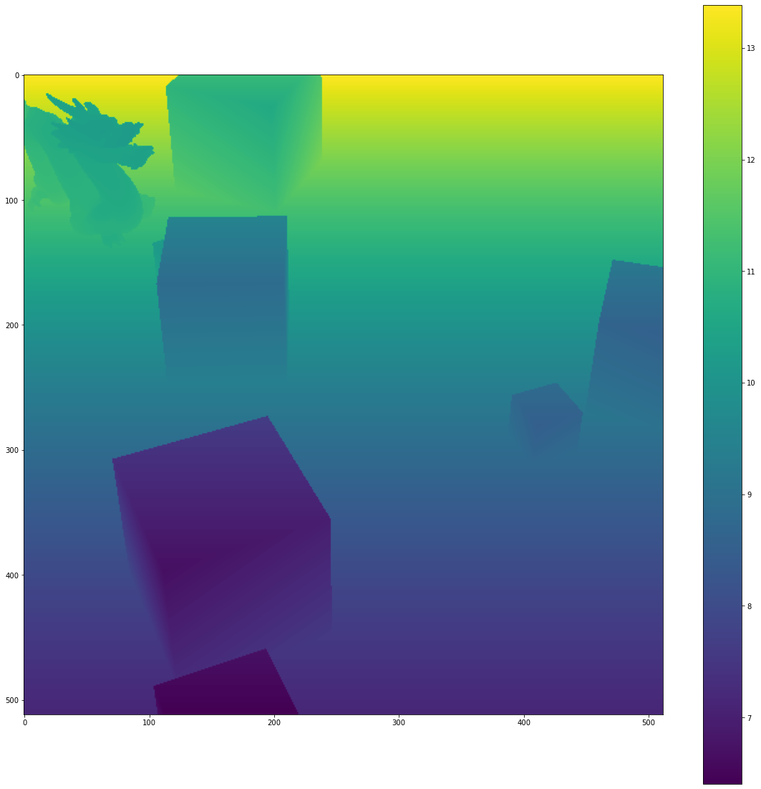

import OpenEXR
import Imath
from PIL import Image
import array
import numpy as np
import json
import matplotlib.pyplot as plt
from matplotlib.patches import Rectangle
plt.rcParams['figure.figsize'] = [20,20]Introduction
At the end of the previous post, I showed how to use Blender to generate depth maps and semantic segmentation maps.
However, this information is in OpenEXR format, and we need to transform it into a form more suitable for training a computer vision model.
While writing this post, I found this post by Tobias Weis to be beneficial.
Extracting numpy array
Next, we can use some boilerplate code to convert the exr file into a Numpy array.
def exr2numpy(exr_path, chanel_name):
'''
See:
https://excamera.com/articles/26/doc/intro.html
http://www.tobias-weis.de/groundtruth-data-for-computer-vision-with-blender/
'''
file = OpenEXR.InputFile(exr_path)
dw = file.header()['dataWindow']
size = (dw.max.x - dw.min.x + 1, dw.max.y - dw.min.y + 1)
Float_Type = Imath.PixelType(Imath.PixelType.FLOAT)
channel_str = file.channel(chanel_name, Float_Type)
channel = np.fromstring(channel_str, dtype = np.float32).reshape(size[1],-1)
return(channel)Semantic Index
exr_path = "Data/2020-10-30-Training-Data-From-OpenEXR/Index/Image0001.exr"
semantic_index = exr2numpy(exr_path, chanel_name= 'R')
fig = plt.figure()
plt.imshow(semantic_index)
plt.colorbar()
plt.show()DeprecationWarning: The binary mode of fromstring is deprecated, as it behaves surprisingly on unicode inputs. Use frombuffer instead
channel = np.fromstring(channel_str, dtype = np.float32).reshape(size[1],-1)Depth (Meters)
exr_path = "Data/2020-10-30-Training-Data-From-OpenEXR/Depth/Image0001.exr"
depth = exr2numpy(exr_path, chanel_name= 'R')
fig = plt.figure()
plt.imshow(depth)
plt.colorbar()
plt.show()DeprecationWarning: The binary mode of fromstring is deprecated, as it behaves surprisingly on unicode inputs. Use frombuffer instead
channel = np.fromstring(channel_str, dtype = np.float32).reshape(size[1],-1)
RGB Image
def EncodeToSRGB(v):
return(np.where(v<=0.0031308,v * 12.92, 1.055*(v**(1.0/2.4)) - 0.055))
channels = []
channel_names = ['R','G','B']
exr_path = "Data/2020-10-30-Training-Data-From-OpenEXR/Image/Image0001.exr"
for channel_name in channel_names:
channel = exr2numpy(exr_path, channel_name)
channels.append(EncodeToSRGB(channel))
RGB = np.dstack(channels)
fig = plt.figure()
plt.imshow(RGB)
plt.colorbar()
plt.show()DeprecationWarning: The binary mode of fromstring is deprecated, as it behaves surprisingly on unicode inputs. Use frombuffer instead
channel = np.fromstring(channel_str, dtype = np.float32).reshape(size[1],-1)
Clipping input data to the valid range for imshow with RGB data ([0..1] for floats or [0..255] for integers).Creating Bounding boxes
Now we can create bounding boxes for each object in the image. Depending on what we want to do next, we could generate annotations in COCO format.
# Create figure and axes
fig, ax = plt.subplots(1)
# Display the image
ax.imshow(RGB)
for i in np.unique(semantic_index):
#index 0 is the background
if i!=0:
#Find the location of the object mask
yi, xi = np.where(semantic_index == i)
# Create a Rectangle patch
rect = Rectangle((np.min(xi), np.min(yi)), np.max(xi) - np.min(xi), np.max(yi) - np.min(yi), linewidth=2, edgecolor='r', facecolor='none', alpha=0.8)
# Add the patch to the Axes
ax.add_patch(rect)
plt.show()Clipping input data to the valid range for imshow with RGB data ([0..1] for floats or [0..255] for integers).Exporting as .png
img = Image.fromarray(np.uint8(RGB*255))
img.save('image.png')Creating JSON metadata.
shapes = []
for i in np.unique(semantic_index):
#index 0 is the background
if i!=0:
#Find the location of the object mask
yi, xi = np.where(semantic_index == i)
#Print the index of the object, and it's bounding box
shapes.append({ "label": "DRAGON",
"points": [[int(np.min(xi)), int(np.min(yi))], [int(np.max(xi)), int(np.max(yi))]],
"group_id": None,
"shape_type": "rectangle",
"flags": {}})
JSON = {
"version": "4.5.6",
"flags": {},
"imagePath": "image.png",
"imageData": None,
"imageHeight": 512,
"imageWidth": 512
}
JSON["shapes"] = shapes
JSON = json.dumps(JSON, sort_keys=True, indent=4)
f = open('image.json','w')
f.write(JSON)
f.close()